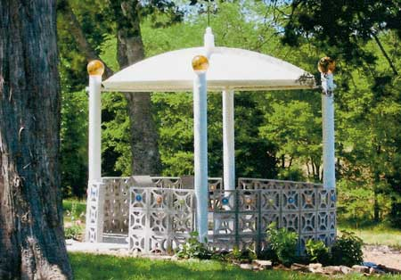

You can build an out-of-the-ordinary gazebo, and recycle at the same time, by using an old satellite dish for the roof. By keeping a used satellite dish out of a landfill, you’ll not only be helping the environment, but creating a unique addition to your own yard or garden that’s virtually maintenance free.
Simply prepare a satellite dish by removing the base, taking it apart, thoroughly cleaning it, and reassembling it with new stainless steel bolts and silicone to make it water tight.
Then level the area where the gazebo will be located and set 6-inch plastic pipe support columns in concrete. For the roof supports, use 1-inch plastic pipe running through the support columns, connected in the center with an ‘X’ fitting.
Next pour a concrete footing as a level foundation for the low wall. The gazebo walls were made of three rows of decorative concrete blocks mortared together. The same blocks were used for the floor, but were filled with concrete and embedded with small multicolored river stones. You can use more pipe fittings to rig a weather vane.
To install the dish roof, have a friend with a tractor and bucket lift the roof into place. Then put bolts through the dish and into the columns to secure the dish.
You can also install gazing balls, fixed with silicone, onto the tops of the columns for a bit of whimsy and color.
|
 RANDY MEISEL This distinct gazebo design adds flare to your space while also giving you a shady spot to relax. |
|
|